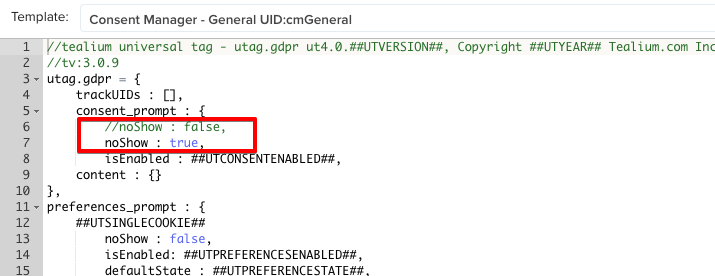

onetrust test
onetrust modal would theoretaically be showing now
CM explicit is on by 'load rule' for all pages on this test page but our modal display is turned off with cmgeneral template edit - all other explicit modal behaviour is still active
CM explicit hold all tags but omit listed tag(s) and waits for consent decision to fire all queued events
onetrust should provide method to attach to their consent decision in their modal and pass the value(s) on the first page ( or anytime it is displayed and consent is changed) -
test in the console with utag.gdpr.setConsentValue(1);
this will trigger the tags held on the first page and set the CONSENTMGR cookie
you would still need a preloader extension to read the onetrust cookie and write the CONSENTMGR cookie since onetrust recreates their cookies when deleted while we do not automatically remake the CONSENTMGR cookie
we also would need the 'categories' in the onetrust consent decision and how they relate to the available 15 categories in the
Consent Preferences Managethe update to the cmGeneral template is one line that deactivates our prompt so it does not display
